1. Club / program choices
SC anonymous demo selectors; protected ClubSelector is source-inspected. AP searches reviewed clubs in a scrollable list with a manual fallback. This is not an authenticated-portal parity claim.

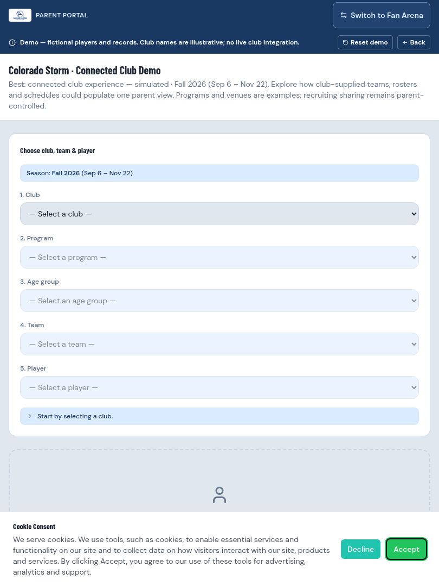

SC source 11de067, fresh November16 public/demo browser sessions at 810×1080. No old source-rendered fixture is used as proof of current parity. Protected experiences remain explicitly blocked. Click images for full resolution. Read REPORT.md for functional and product gates.
SC anonymous demo selectors; protected ClubSelector is source-inspected. AP searches reviewed clubs in a scrollable list with a manual fallback. This is not an authenticated-portal parity claim.

SC authenticated creation is blocked by sign-in. AP creation completes to an athlete profile; full rendered SC onboarding comparison remains BLOCKED.
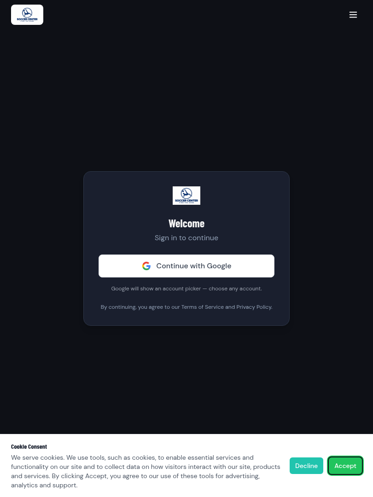
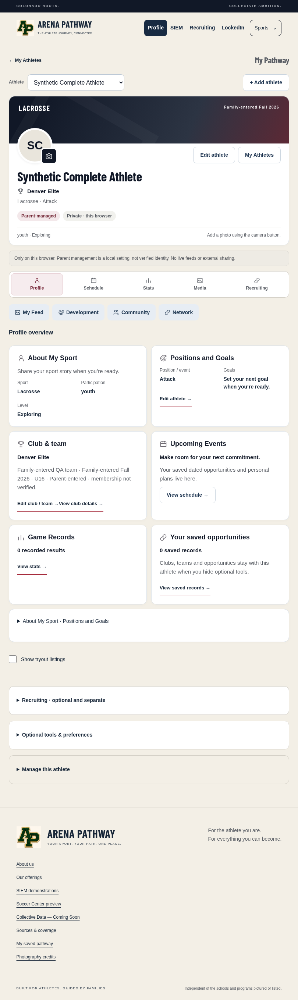
Both organize identity and athlete sections. AP retains its collegiate identity, browser-only privacy and sport fields; SC public demo uses fictional soccer/club data.

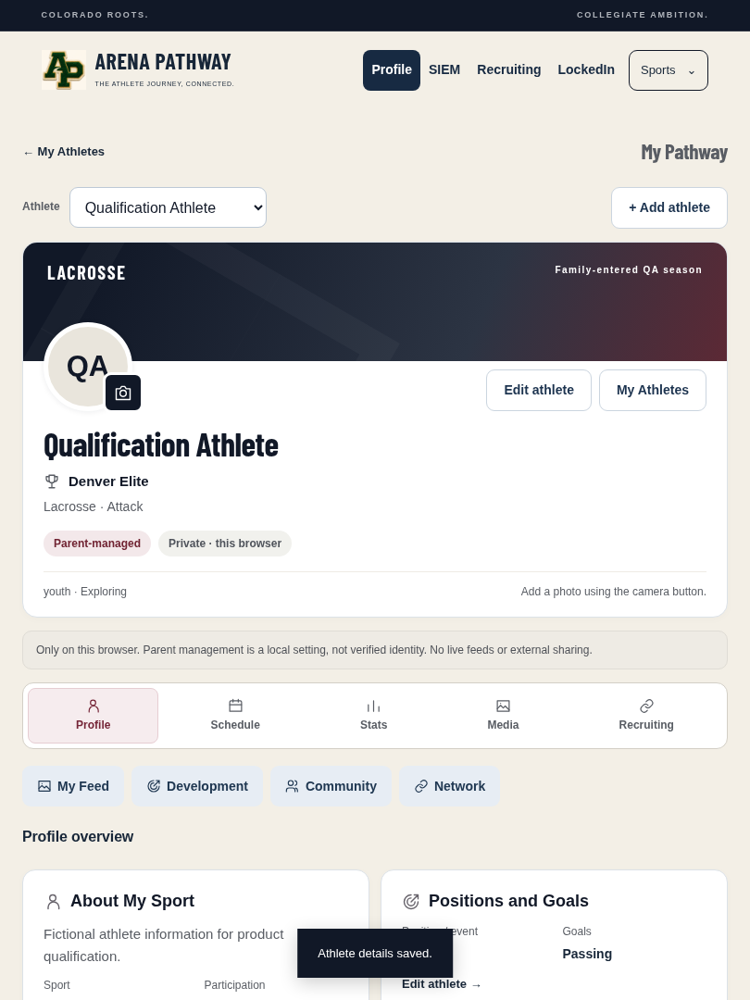
AP shares stable athlete occurrences into SIEM; Mon/Wed and one-time competitions are tested. Different fictional dates/athletes are shown, not identical event data.
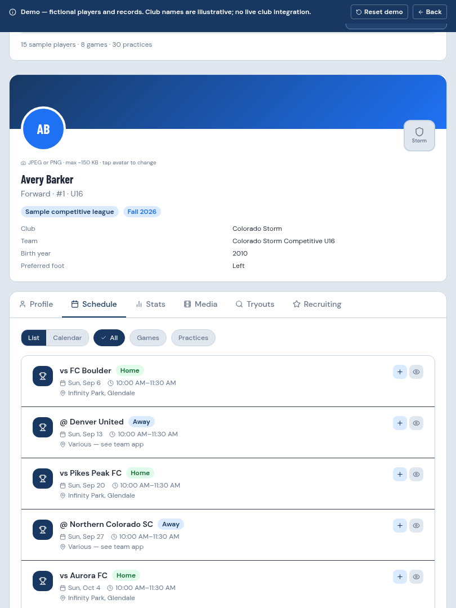
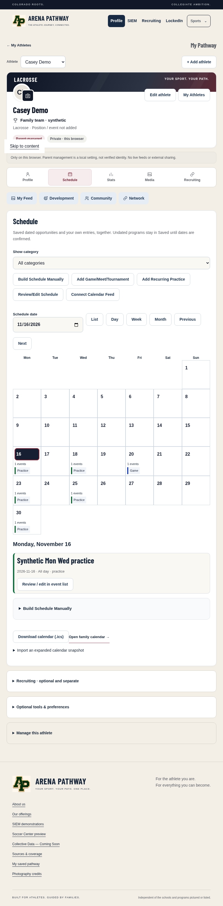
AP uploads are local and competition-selectable, while historical practice refs remain editable. SC has richer protected assignment/collection services, which are not imported.

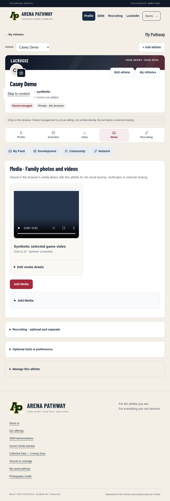
Same research-first hierarchy. AP has 43 reviewed four-sport program rows and zero verified coaching contacts; SC soccer contacts are not imported as other sports.

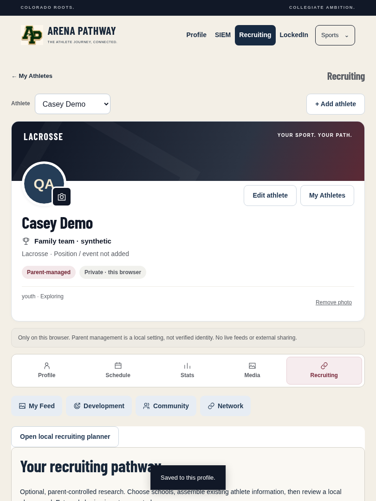
AP edits the existing athlete, shows saved values/confirmation and preserves context. SC public builder demonstrates its own soccer/education fields; no shared production backend is claimed.
AP canonical field keys/projection were ported in the shared recruiting baseline. Selections remain all-off until chosen. The SC capture is its demo builder, not a new authenticated guardian selection session.

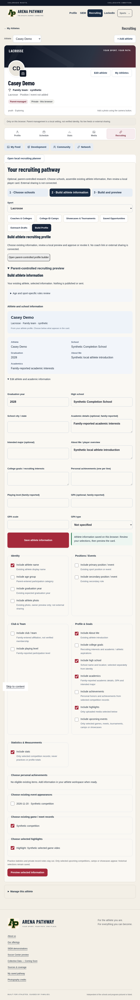
Actual rendered SC demo and actual AP shared card; compare hierarchy rather than fictional performance values. AP selected local video plays on user request; no external secure coach sharing.
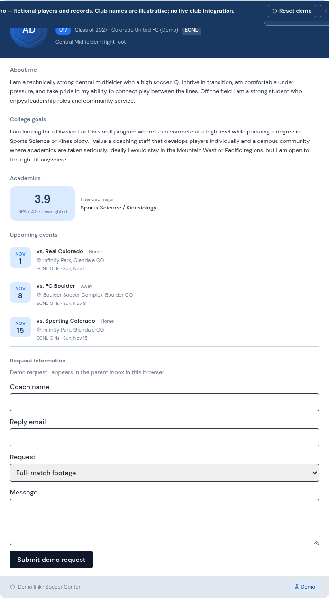
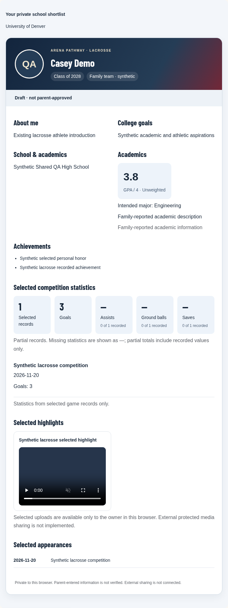
SC protected My Feed cannot be captured without sign-in. Its actual UnifiedFeedWall/news-feed source was inspected; AP uses permitted illustrative photography and explicit snapshot/RSS distinctions. Rendered protected-feed parity remains BLOCKED.
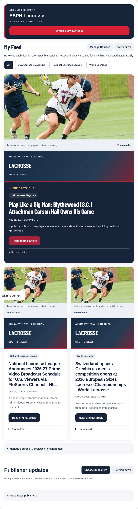